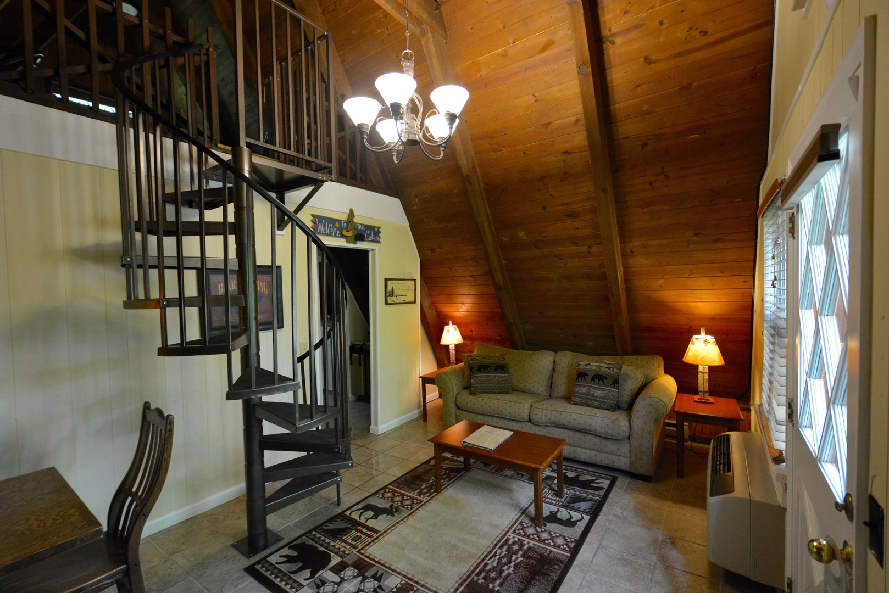
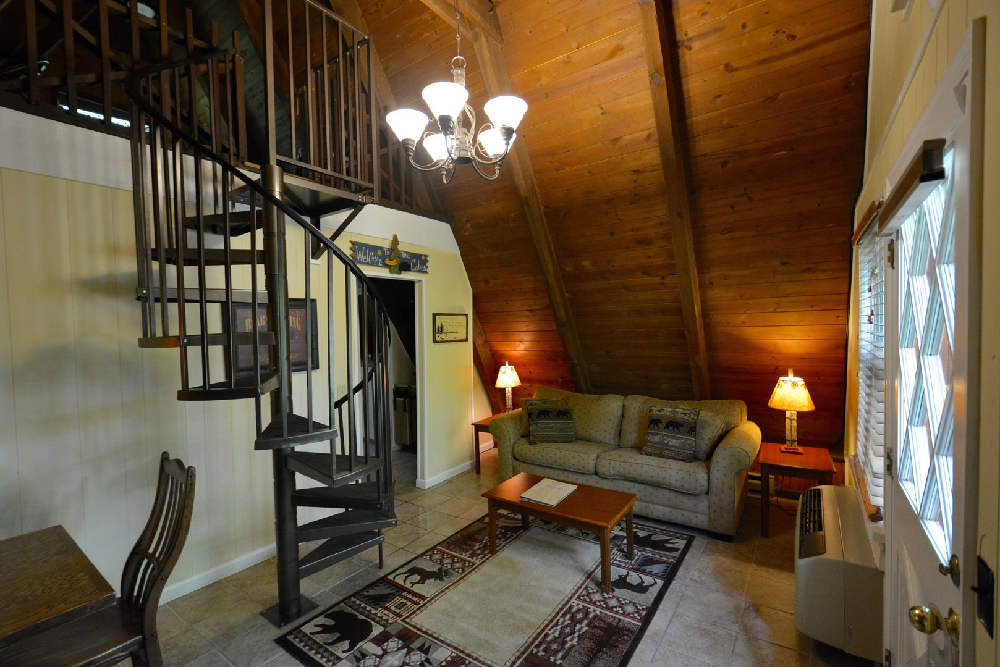

Summer Vacation 2019
Click on any thumbnail to view the full-size image
Aug 5
- Drive to Hillsville, VA, about 5 hours
- King suite w/sofabed at Hampton Inn, RESERVED, no fee to cancel through Aug 2
Aug 6
- 30 min drive to Blue Ridge Parkway "Highlands" region northern entrance, milepost 218
- Approx 90 mins to milepost 272, E.B. Jeffress Park, one-mile hike to Cascades waterfall
- Approx 40 mins to milepost 291, town of Blowing Rock, restaurants for lunch, etc.
- Milepost 294, Price Lake estate house tour, explore gardens, trails, etc.
- Milepost 297, Julian Price park and Price Lake overlook
- Approx 25 mins to Boone, NC, restaurant for dinner, etc.
- King suite w/sofabed at Fairfield Inn in Boone, RESERVED, no fee to cancel through Aug 4
Aug 7
- Approx 20 mins to Milepost 304, Linn Cove Viaduct, visitor center, hiking trails (could do this on the 6th
instead if
there is time)
- Approx 50 mins to milepost 306, Grandfather Mountain, restaurant, museum, hiking trails, drive to the peak
- Approx 30 mins to milepost 317, Linville Falls, visitor center, hiking trails, overlook of gorge and falls
- Approx 25 mins to milepost 331, NC Museum of Minerals
- Approx 10 mins to milepost 334, Switzerland Inn, Chalet Restaurant for dinner

- A-Frame cottage at Switzerland Inn, 2 NIGHTS RESERVED, cancel w/$20 fee through July 28

 

Aug 8
- Approx 15 mins to Crabtree Falls, 2.5 mile hike to falls
- Approx 45 mins to Mt. Mitchell summit, observation deck, restaurant for lunch
- Approx 30 mins to milepost 364, Craggy Gardens Visitor Center
- Approx 1 hour backtrack to Switzerland Inn
Aug 9
- Approx 90 mins on Blue Ridge Parkway to Asheville, NC.
- Tour Biltmore. Regular tour is self-guided. Need to reserve Rooftop Tour and Behind the Scenes Tour.

- King suite w/sofabed at Fairfield Inn, RESERVED, no fee to cancel through Aug 7
Aug 10
- Finish last segment of Blue Ridge Parkway (about 3 hours)
- Lunch in Cherokee, NC
- Drive to Clingman's Dome in Great Smoky Mountains National Park (about 1 hour)
- Explore Clingman's Dome summit and observation tower
- Drive to Dandridge, TN (about 2 hours)
- Dinner at "Angelo's at the Point" on Douglass Lake, Dandridge
- King suite w/sofabed at Hampton Inn Dandridge, RESERVED, cancel through Aug 7
Aug 11
- Approx 3.5 hours to Pipestem Resort, WV
- King suite w/sofabed and canyon view, 2 NIGHTS RESERVED, no fee to cancel by Aug 9
Aug 12
- Explore resort, pools, restaurants, hiking trails, tramway to base of gorge, etc.
- Coal mine museum, tour, and ride on underground mining railroad at Beckley
- Stay at Pipestem again
Aug 13
- Approx 3 hours to Greenbank Observatory, tour, museum, etc.


- Approx 20 mins to Cass, WV
- Stay in restored company house?? NO RESERVATIONS YET. NON-REFUNDABLE.
Aug 14
- Cass Railroad to Bald Knob. Train leaves at noon, lunch on train, returns at 4:30pm, NEED RESERVATIONS


- Stay in Cass again
Aug 15
- Approx 1 hour to Seneca Rocks
- Approx 2.25 hours to Skyline Drive entrance at Swift Run Gap
- Approx 30 mins on Skyline Drive from Swift Run Gap to Big Meadows Lodge
- Dinner at Big Meadows Lodge
- King suite w/2 double beds suite at Big Meadows Lodge, RESERVED, cancel w/$15 fee by Aug 12
Aug 16
{kind=link}
{kind=link}
{kind=link}
{kind=link}